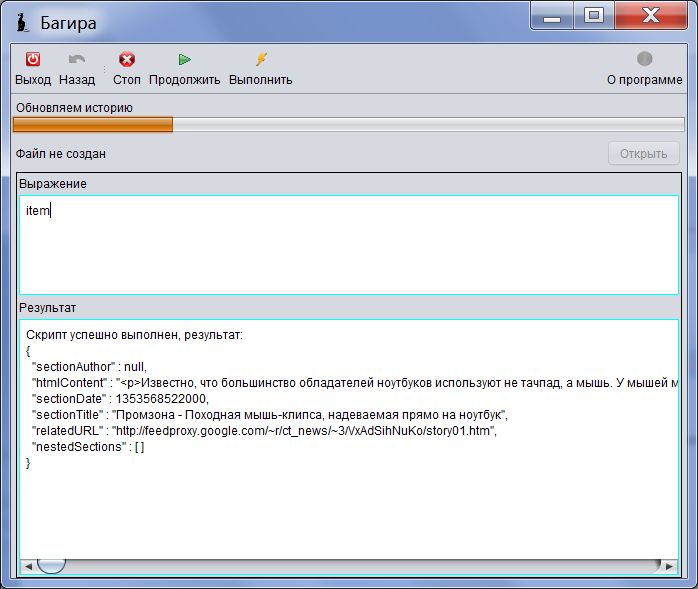

Еще один способ отладки скрипта - это использование команды debug .
//@ description Computerra (Debug)
showMessage 'готовим книжку - ждите...'
rss('http://feeds.feedburner.com/ct_news?format=xml', 'http://www.computerra.ru/new/logo2.gif'){
useTimeStamp(true,false)
updateItem{
String content = loadAsString it.relatedURL
if(content){
String subContent = content.findFirst('<div id="content">(.*)<div id="fin">', '<!-- start -->(.*)<!-- fin -->', '<div id="content">(.*)')
if(subContent){
content = subContent
} else{
log "subcontent is null, content = $content"
it.htmlContent = ' '
return
}
content = content.deleteAll('<form.+?/form>','<noscript.+?/noscript>', '<iframe.+?/>')
it.htmlContent = content
binding.item = it
debug()
}
}
}
showMessage 'генерация книжки завершена'
binding.item = it debug()
В этой строке в контекст скрипта кладется переменная item , которая является экземпляром класса HTMLSection и представляет содержимое текущего поста.
В следующей строке при вызове функции debug() выполнение скрипта приостанавливается, и окно приобретает следующий вид:

Если в верхнем текстовом поле ввести item и нажать Выполнить , то в нижнем текстовом поле отобразится результат: содержимое переменной binding.item . А если выполнить строку item.sectionTitle='Modified title' , то Вы измените значение sectionTitle текущего сообщения. Если нажать Продолжить , то Вы выйдете из режима отладки.
На самом деле, это не полноценная отладка. Просто поток, выполняющий текущий скрипт приостанавливается, и запускается новый поток, который выполняет скрипт, который Вы вводите в верхнем поле. При этом, для обоих скриптов используется один и тот же контекст ( binding ), через который можно получить доступ к переменным исходного скрипта.